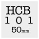

|  Participation costs $7. Participation fees go towards admin costs and a "Best of Slide-Show" prize. For more information or to sign up, please email Troy Freund or call 414-405-7723 This event sponsored by: For more information about Henri Cartier-Bresson, please visit: |
{ HCB 101 } |
|
August 22nd, 2009 will host an exciting and unique event in the photo-community of Milwaukee, WI. In honor of Henri Cartier-Bresson's photo legacy, photographers will take to the streets of Milwaukee and attempt to follow in his footsteps, capturing their own "decisive moments". Henri Cartier-Bresson was a French photographer, born in 1908 and passed away in 2004. His influence on modern photography is unarguable. With his Leica and 50mm lens in hand, Henri traveled the world, bearing witness to many moments that would pass as water through the hands of lesser photographers. He is famous for originating the phrase "the decisive moment"; in his introduction to his book of the same name, he said "I craved to seize the whole essence, in the confines of one single photograph, of some situation that was in the process of unrolling itself before my eyes." On August 22nd, digital photographers of the Milwaukee area will make similar attempts over the course of the day. These photographers will, as HCB said, make photos with a "velvet hand and a hawk's eye". Photographers will set out on Milwaukee with their lenses fixed at a 50mm angle of view and make photos for as long as they like. Then, by 6:00 p.m., the photographers will meet up at Cardinal Stritch University's Communications Fine Arts Building to download their best (6-8) images and share in a group slideshow in the CFA's fine projection room! |